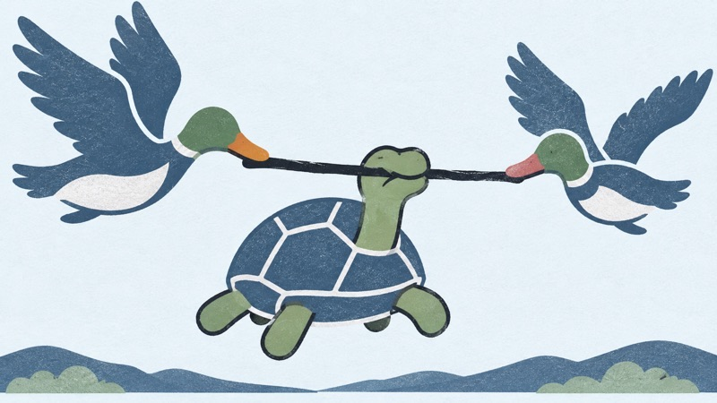

The Tortoise and the Ducks
After many years, Tortoise began to wish he had gone to that . When he saw how the birds flew about and how the and the ran by, always to see everything there was to be seen, the Tortoise felt very sad and . He wanted to see the world too, and there he was with a house on his back and little short legs that could him along.